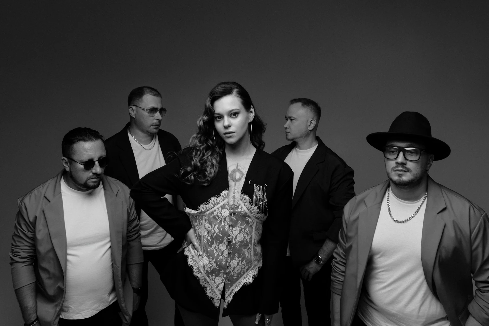

КАВЕР-ГРУППА
МАЙБАХ
Два солиста
Мужской и женский вокал
В программе — песни Depeche Mode, Bon Jovi, «Зверей» и других исполнителей

МАЙБАХ / COVER BANDО ГРУППЕ
МАЙБАХ
МАЙБАХ — группа с двумя солистами: мужской и женский вокал
В программе — русский рок, зарубежные поп-рок хиты, популярные русские песни, ретро и медленные композиции
Пригласить группу01 / НА СЦЕНЕ
МАЙБАХ
на сцене
03 / В КАДРЕ
Фотографии группы
ВАШЕ МЕРОПРИЯТИЕ
Пригласить МАЙБАХ
Обсудим дату, площадку и программу выступления